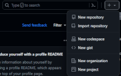
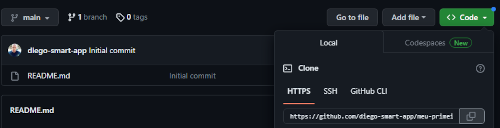
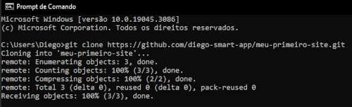

O GITHUB é uma ferramenta poderosa para compartilhamento de projetos e também de armazenamento/gerenciamento de versões de softwares criados. Pode ser pago ou grátis, isso depende da aplicação, sendo privada ou pública, existem algumas limitações para a opção grátis, porém com ela é possível fazer muitas coisas. A seguir vamos ver o passo a passo para usar esta ferramenta.
Para usar o GITHUB temos que ter em mente que precisamos do GIT, ela é uma ferramenta auxiliar a GITHUB. Para isso basta baixar o programa aqui e efetuar o download de acordo com seu sistema operacional.
Isso é muito simples, é só seguir o padrão para a maioria dos softwares, pois o que precisamos é apenas o padrão da instalação. Portanto é só clicar em NEXT, NEXT, etc. E o software estará pronto para o uso.
Como esta ferramenta será usada para guardar os projetos, precisamos ter uma conta no GitHub acesse aqui, faça seu cadastro e abra sua conta.
O repositório é uma “pasta online” onde nosso projeto será armazenado. Para criar um novo repositório clique em NEW REPOSITORY conforme imagem:

Depois é só dar um nome e uma descrição. O nome deve ser específico, por exemplo um projeto de aplicativo mobile gerenciador de finanças pessoais, o nome pode ser: aplicativo-gerenciador-financeiro. Procure também colocar uma descrição (README).
Agora que temos o repositório podemos fazer o clone no computador, pra isso clique em CODE e copie o link:

Esse é um exemplo de como é a tela pra fazer a cópia do link. Depois de copiar temos que executar usando o passo a seguir.
Agora vamos usar o programa GIT, primeiro abrimos o CMD do computador (usando o Windows) e colocamos o comando git clone link_que_voce_copiou:

Agora temos uma cópia do nosso repositório em nosso computador.
Antes de mais nada temos que criar todo o projeto dentro da nossa pasta, depois efetuar os camandos:
Antes de autalizar o repositório precisamos ter em mente algumas coisas. Mas vamos vendo os passos e entendendo cada um.
Quando se trata de um projeto com vários programadores e você está a modificar algo, o primeiro comando antes de tudo é usar o: